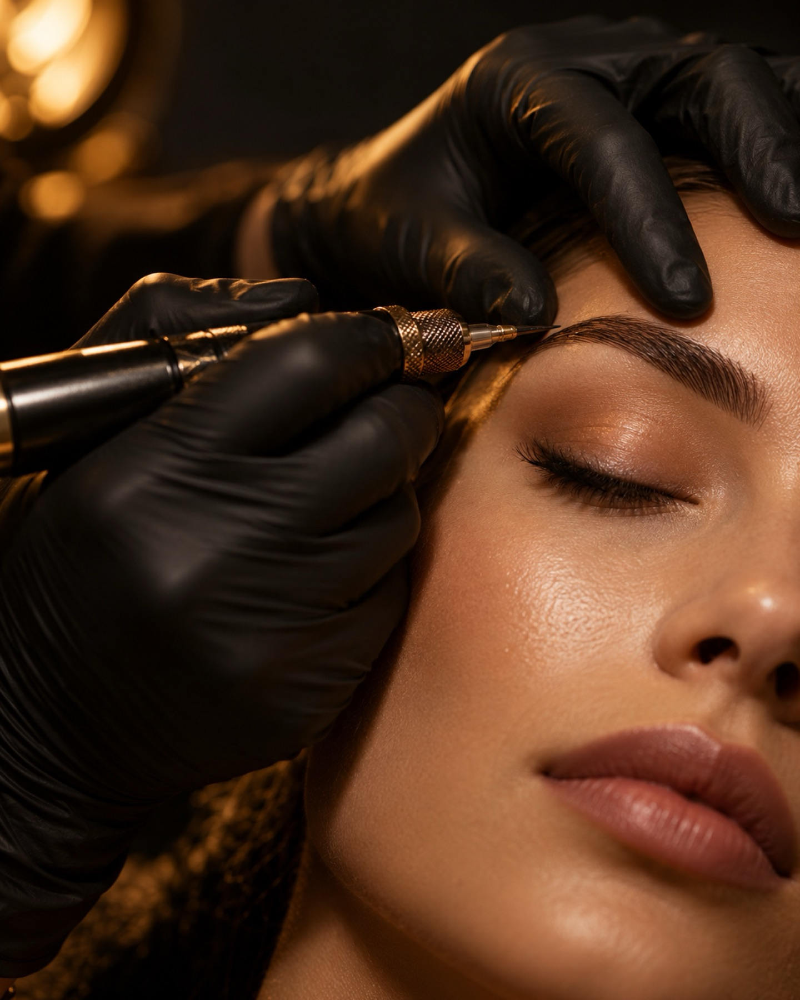
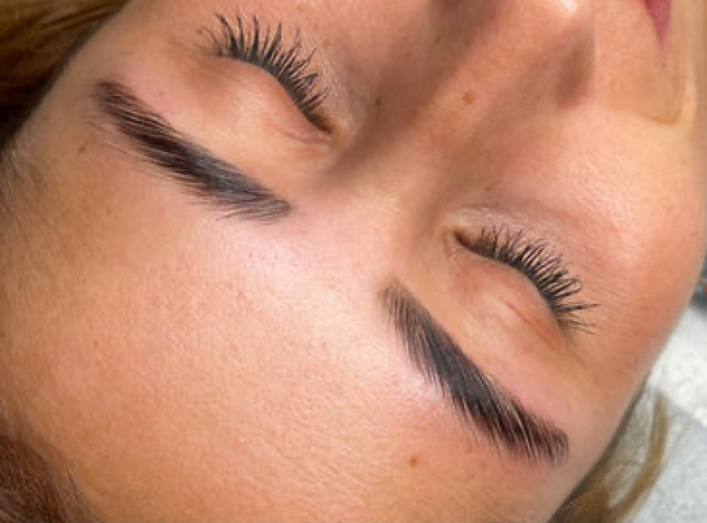

Schönheit als Ritual.
Permanent Make-up, Wimpern- und Brauenkunst, Hydrafacial und mehr. Ein ruhiger Ort in Emden, nur für Sie.
Termin anfragen
Jede Behandlung ein Ritual
- 01
Aqua Facial / HydraFacial
Porentiefe Reinigung, Peeling und Feuchtigkeitspflege in einer Behandlung. Die Haut wirkt danach frisch und gepflegt.
- 02
Wimpernlifting
Ihre eigenen Wimpern werden geschwungen und betont. Ohne Aufkleben, mit natürlichem Ergebnis.
- 03
Browlifting / Brow Lamination
Die Augenbrauen werden in Form gebracht und in die gewünschte Richtung gelegt, für einen gepflegten, vollen Look.
- 04
Permanent Make-up / Microblading
Brauen, Lippen oder Lidstrich: individuell entworfen, passend zu Gesichtsform und Farbtyp.
- 05
Dauerhafte Haarentfernung
Haarentfernung mit Laser, in mehreren Sitzungen. Wir besprechen vorab, was für Ihren Haut- und Haartyp sinnvoll ist.
- 06
Zahnschmuck
Kleine Steine für ein Lächeln mit Glanz, schonend aufgebracht und jederzeit wieder entfernbar.
- 07
Make-up / Visagistik
Ob Feier, Hochzeit oder Shooting: ein Make-up, das zu Ihnen und zum Anlass passt.
- 08
Individuelle Gesichtsbehandlungen
Klassische Gesichtsbehandlung, Microneedling, Derma Planing oder Porenreinigung: abgestimmt auf den Zustand Ihrer Haut.
Jede Kundin soll sich bei uns gut aufgehoben fühlen.
Dilara Kalmaz führt DILO Beauty Studio in Emden und Oldenburg. Zum Angebot gehören Kosmetik und Permanent Make-up ebenso wie Wimpern, Brauen, Haarentfernung, Piercing und Nageldesign.
Ihr Wissen gibt sie auch in Schulungen weiter.
Ihr Termin in drei Schritten
Beratung
Wir sprechen über Ihre Wünsche, Ihre Haut und mögliche Vorerkrankungen. Sie erfahren, was die Behandlung leisten kann.
Behandlung
Mit sauberem Material und ruhigen Händen. Sie liegen bequem, wir erklären, was wir tun.
Nachpflege
Sie erhalten klare Hinweise, wie Sie die Haut in den Tagen danach pflegen und schützen.
Einblicke

Wissen, das bleibt
Sie möchten selbst in die Beauty-Branche einsteigen oder Ihr Können erweitern? DILO Beauty bietet Schulungen an.
- Wimpernlifting
- Nanoblading
- Browlifting
- Profi Wimpernverlängerung
Häufige Fragen
Wie bereite ich mich auf den Termin vor?
Kommen Sie mit sauberer Haut, möglichst ohne Make-up im Behandlungsbereich. Wenn Sie Medikamente nehmen oder Hautprobleme haben, sagen Sie uns das bitte vorab.
Wie lange dauert eine Behandlung?
Das hängt von der Behandlung ab. Bei der Terminvergabe nennen wir Ihnen den Zeitrahmen.
Was muss ich nach der Behandlung beachten?
Sie bekommen nach jeder Behandlung persönliche Hinweise zur Nachpflege, mündlich im Studio und bei Bedarf auch noch einmal auf Nachfrage.
Was ist, wenn ich den Termin absagen muss?
Bitte melden Sie sich so früh wie möglich telefonisch oder per E-Mail, dann finden wir gemeinsam einen neuen Termin.
Termin anfragen
- AdresseDILO Beauty Studio, Am Delft 11, 26721 Emden
- Telefon und WhatsApp Emden+49 1525 2618501
- Telefon und WhatsApp Oldenburg+49 171 4780488
- E-Mailinfo@dilo-beauty.de
- ÖffnungszeitenTermine nach Vereinbarung